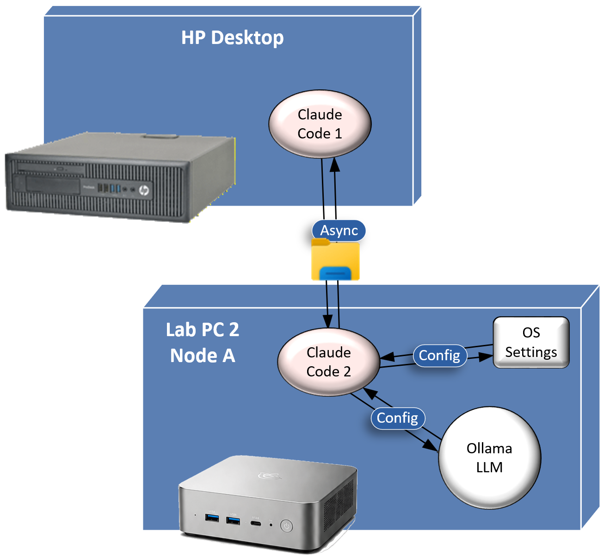

The AI Lab isn't one machine — it's two nodes, run by two people, tied together over a private mesh network so both sides can see and (eventually) share what the other is running.
The first node to come online (July 2, 2026 — see Build Journal #001). Runs Windows 11, with Ollama serving models locally and Open WebUI as the browser front end. Joined the Tailscale mesh as ai-lab-b.
Running Linux with Ollama serving a model nicknamed "Gwen." A lightweight custom chat UI ("GwenUI") was also built for it, with a small Vercel serverless proxy reshaping Ollama's API responses.
Tailscale gives both nodes private IP addresses on a shared mesh network (a "tailnet"), so they can reach each other securely without exposing anything to the public internet. This is also what lets a phone reach Open WebUI on Node A from anywhere, not just the condo LAN — see the Field Guide's Mobile Access page.
Claude Code acts as the engineering assistant for the lab itself — installing software, writing documentation, building this very site, and keeping the Build Journal and Engineering Notebook up to date as the lab grows.
As of July 12, 2026, there are two separate Claude Code instances running: one on Tony's everyday HP desktop, and a second installed directly on Node A (ai-lab-b) itself, alongside the Ollama LLM it manages there.

The two instances hand off messages through cc-sync, a plain-text folder shared over OneDrive rather than a live network connection — which is why the diagram labels that link Async, not Sync. Each instance polls the folder on an hourly local loop (plus ad hoc checks on request) and follows the same rule on both sides: read a new file, understand what it's asking, prepare a plan — then stop and wait for a human go-ahead before acting or replying.
Async also matches how Tony actually works day to day: he drives the lab primarily through Claude Code 1 on the HP desktop — the "architect" assistant for planning and documentation — rather than having to hold the same conversation twice with two different assistants in real time. Claude Code 2 stays close to Node A itself, checking and adjusting OS-level parameters directly on that machine, and reports back through the shared folder when Tony has something for it or wants a status check.